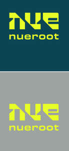

Trade Mark Journal No.2025/030 25 July 2025
UK00004233715 15 July 2025 (3,44)

- Class 3
- Beauty serums; Beauty creams; Beauty lotions; Beauty care cosmetics; Beauty masks; Masks (Beauty -); Beauty milk; Beauty gels; Beauty milks; Beauty creams for body care; Facial beauty masks; Beauty balm creams; Beauty preparations for the hair; Beauty care preparations; Distilled oils for beauty care; Beauty tonics for application to the face; Beauty masks for hands; Beauty serums with anti-ageing properties; Beauty tonics for application to the body; Natural cosmetics; Body cleaning and beauty care preparations; Non-medicated beauty preparations; Natural makeup; Skincare cosmetics; Body care cosmetics; Natural perfumery; Body and facial creams [cosmetics]; Hair cosmetics; Cosmetics; Skin care cosmetics; Colour cosmetics; Facial creams [cosmetics]; Hair care creams [for cosmetic use]; Anti-aging moisturizers used as cosmetics; Cosmetic products in the form of aerosols for skincare; Colour cosmetics for the eyes; Body creams [cosmetics]; Natural oils for cosmetic purposes; Hair care lotions [for cosmetic use]; Organic cosmetics; Eye cosmetics; Hair shampoo; Hair shampoos; Hair relaxers; Hair dye; Hair conditioner; Hair mousse; Hair lotions; Hair gel; Hair moisturizers; Hair mousses; Hair conditioners; Hair wax; Hair sprays; Hair moisturisers; Hair spray; Hair oils; Shampoos for human hair; Hair styling gel; Hair creams; Hair cream; Hair colorants; Hair gels; Hair emollients; Hair nourishers; Hair powder; Styling sprays for the hair; Hair oil; Hair styling waxes; Hair masks; Styling gels for the hair; Hair styling gels; Styling paste for hair; Hair liquid; Hair glazes; Hair and body wash; Cosmetic preparations for the hair and scalp; Creams (Cosmetic -); Cosmetic creams; Cosmetics and cosmetic preparations; Sunscreens [for cosmetic use]; Sunscreen [for cosmetic use]; Lotions for cosmetic purposes; Cosmetic masks; Facial creams [for cosmetic use]; Facial creams [cosmetic]; Cosmetic powder; Cosmetic preparations; Anti-aging creams [for cosmetic use]; Cosmetic kits; Facial moisturisers [cosmetic]; Cosmetic skin fresheners; Skin creams [cosmetic]; Skin creams [for cosmetic use]; Pro-collagen for cosmetic purposes; Facial cream [for cosmetic use]; Serums for cosmetic purposes; Skin balms [cosmetic]; Skin cleansers [cosmetic]; Collagen for cosmetic purposes; Cosmetic skin enhancers; Cosmetic hair lotions; Facial scrubs [cosmetic]; Facial toners [cosmetic]; Cosmetic creams and lotions; Anti-wrinkle cream [for cosmetic use]; Facial masks [cosmetic]; Retinol cream for cosmetic purposes; Skin care creams [cosmetic]; Skin care (Cosmetic preparations for -); Moisturising gels [cosmetic]; Moisturising skin lotions [cosmetic]; Suntan oils for cosmetic purposes; Anti-ageing creams [for cosmetic use]; Hair preservation treatments for cosmetic use; Anti-wrinkle creams [for cosmetic use]; Scalp treatments (Non-medicated -); Non-medicated scalp treatment cream; Cosmetic creams for skin care; Wrinkle resistant creams [for cosmetic use]; Cosmetic moisturisers; Cosmetic soaps; Cosmetic facial lotions; Facial lotions [cosmetic]; Cosmetic soap; Tonics [cosmetic]; Facial cleansers [cosmetic]; Kits (Cosmetic -); Cosmetic creams for the skin; Cleansing creams [cosmetic]; Lip coatings [cosmetic]; Skin cream [for cosmetic use]; After-sun lotions [for cosmetic use]; Cosmetic sun-protecting preparations; Cosmetic facial masks; Acne cleansers, cosmetic; Sunscreen creams [for cosmetic use]; Cosmetic products for the shower; Exfoliating scrubs for cosmetic purposes; Hair tonics [for cosmetic use]; Eye cream; Eye creams; Eye concealers; Eye gel; Eye lotions; Eye gels; Under eye correctors; Cosmetic eye gels; Gel eye patches for cosmetic purposes; Creams (Non-medicated -) for the eyes.
- Class 44
- Beauty care; Beauty treatment; Beauty consultation; Beauty counselling; Hygienic and beauty care; Services of a hair and beauty salon; Beauty therapy services; Beauty treatment services; Facial beauty treatment services; Hygienic and beauty care for humans; Hygienic and beauty care services; Hygienic and beauty care for human beings; Beauty consultation services; Beauty information services; Consultancy in the field of body and beauty care; Beauty advisory services; Beauty consultancy services; Information relating to beauty care; Information relating to beauty; Advisory services relating to beauty care; Consultation services relating to beauty care; Advisory services relating to beauty; Consultancy services relating to beauty; Providing information relating to beauty salon services; Advisory services relating to beauty treatment; Providing information about beauty; Consultancy provided via the Internet in the field of body and beauty care; Skin care salons; Cosmetic treatment services for the body, face and hair; Cosmetic body care services provided by health spas; Shampooing of the hair; Hair styling; Hair treatment; Hair restoration; Surgery (Cosmetic -); Cosmetic treatment; Cosmetic and plastic surgery; Cosmetic make-up services; Injectable filler treatments for cosmetic purposes; Cosmetic treatment for the hair; Cosmetic treatment for the body; Cosmetic and plastic surgery clinic services; Cosmetic treatment for the face; Cosmetic laser treatment of skin; Surgical treatment services; Cosmetic laser treatment of varicose veins; Microneedling treatment services; Cosmetic laser treatment of tattoos; Cosmetic laser treatment of unwanted hair; Cosmetic surgery services; Cosmetic laser treatment for hair growth; Cosmetic facial and body treatment services; Laser skin rejuvenation services; Cosmetic laser treatment of spider veins; Medical services for treatment of the skin; Facial treatment services; Cosmetic analysis; Human hygiene and beauty care.
Plasma therapy ltd